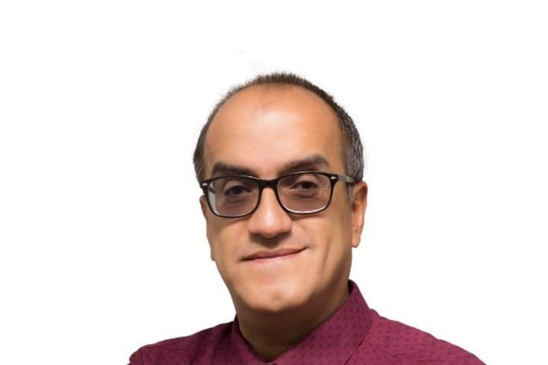

Eliécer Arenas
Eliecer Arenas Monsalve es profesor de planta e investigador en la Universidad Pedagógica Nacional, con una destacada trayectoria dedicada a profundizar en las relaciones entre la música, la cultura y la educación en Colombia. Cuenta con estudios avanzados en Antropología Social en la Universidad Complutense de Madrid, así como formación en Psicología (Pontificia Universidad Javeriana) y en Pedagogía Musical. Actualmente adelanta su Doctorado Interinstitucional en Educación y orienta sus búsquedas hacia una educación musical centrada en el cuidado, el empoderamiento y el desarrollo de las capacidades del músico.
A lo largo de su carrera ha sido conferencista principal en múltiples congresos nacionales e internacionales de educación y música, y participó como relator académico en la Misión Internacional de Sabios de 2019, en el foco de Industrias Culturales y Creativas. Es miembro del grupo de investigación Cuestionarte (Categoría A en el Ministerio de Ciencias), coautor de diversas publicaciones sobre música popular, políticas y memorias culturales en Bogotá, y cofundador de Sonido Colectivo, una comunidad de conocimiento dedicada a reflexionar sobre la función social de la música.